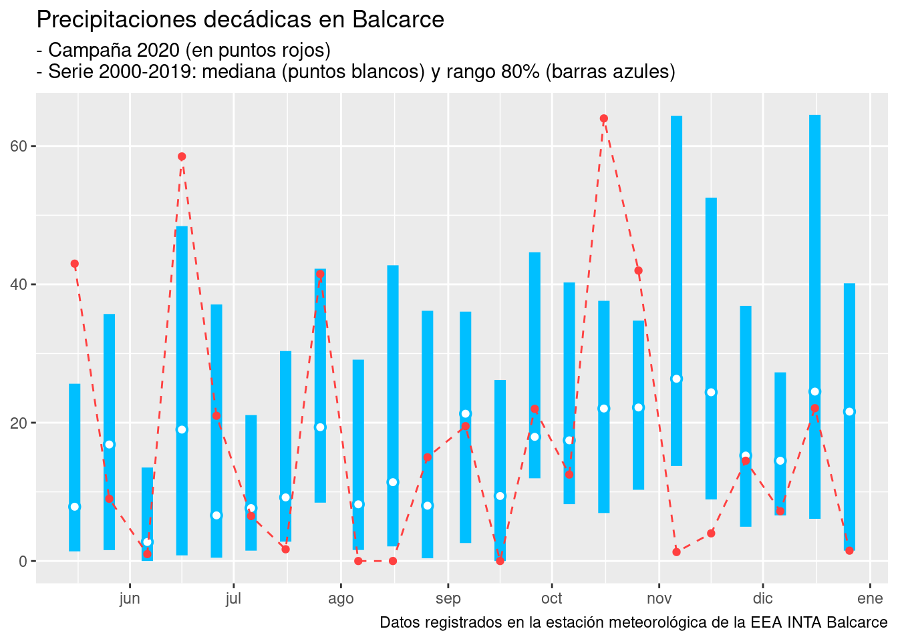
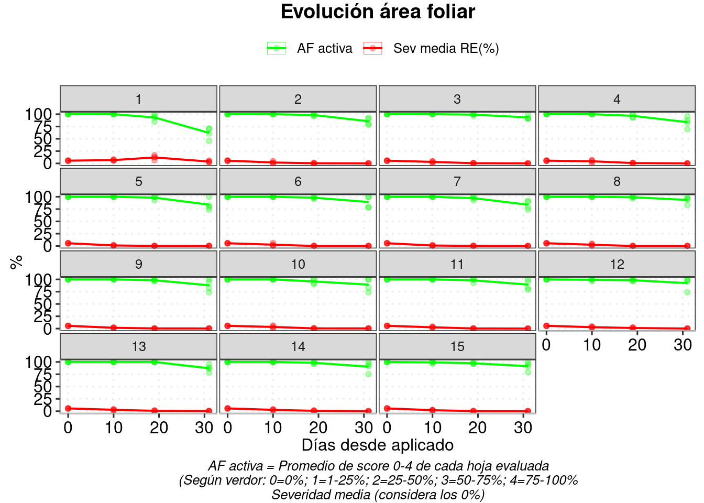

4 Condiciones meteorológicas
4.1 Precipitaciones
4.1.1 Cálculos resumen y visualización gráfica de las precipitaciones acumuladas por década
1- Importar datos y agregar algunas columnas de fechas
serie <- serie %>%
mutate(year = lubridate::year(date),
month = lubridate::month(date),
julian = lubridate::yday(date))2 - Calcular lluvias acumuladas por década
serie20 <- serie %>%
filter(year!=2020) %>%
group_by(date=if_else(day(date) >= 30,
floor_date(date, "20 days"),
floor_date(date, "10 days"))) %>%
summarize(rain_acum = sum(rain),
days = n()) %>%
mutate(year = year(date),
month = month(date)) %>%
ungroup %>%
group_by(year) %>%
mutate(decada = row_number()) %>%
ungroup %>%
group_by(decada) %>%
summarise(month = first(month),
med = quantile(rain_acum, .5, na.rm = T),
lower_80=quantile(rain_acum, .2, na.rm = T), # Rango 80% de los años
upper_80=quantile(rain_acum, .8, na.rm = T))
serie20## # A tibble: 36 x 5
## decada month med lower_80 upper_80
## <int> <dbl> <dbl> <dbl> <dbl>
## 1 1 1 14.1 7.1 34.4
## 2 2 1 12.8 3.6 55.6
## 3 3 1 50.8 16.0 70.2
## 4 4 2 20.2 12.6 60.
## 5 5 2 23.8 2.36 46.3
## 6 6 2 20.8 1.5 56.5
## 7 7 3 35.3 15.1 70.2
## 8 8 3 27.6 16.8 55.3
## 9 9 3 8.45 2.44 33.9
## 10 10 4 17.8 3.4 48.3
## # … with 26 more rowsc2020 <- # Para la reciente campaña
serie %>%
group_by(date = if_else(day(date) >= 30,
floor_date(date, "20 days"),
floor_date(date, "10 days"))) %>%
summarize(rain_acum_season = sum(rain)) %>% #, days=n()) %>%
mutate(year = year(date),
month = month(date)) %>%
group_by(year) %>%
mutate(decada = row_number()) %>%
filter(date > '2020-05-01', date < '2020-12-31') %>%
left_join(serie20, by = c("decada")) %>%
mutate(date = as.Date(date))
# fusionar ambos datasets (serie + campaña)3 - Visualizar la serie y sus bandas de 80-percentil, y valores acumulados por década de la última campaña
c2020 %>%
ggplot(aes(x=date)) +
geom_pointrange(aes(y=med, ymin=lower_80, ymax=upper_80), fill='white', color='deepskyblue',
shape=21, fatten=.7, size=3, position=(p5=position_nudge(x = 5)))+
geom_point(aes(y=rain_acum_season), col ="brown1",
position=p5) +
geom_line(aes(y=rain_acum_season, group=1), col ="brown1", linetype="dashed", position=p5)+
# scale_y_continuous(limits=c(0, 100), expand=c(0.05, 0))+
scale_x_date(date_breaks="1 month", date_labels="%b", expand=expansion(0.05,0))+
labs(x=NULL, y=NULL,
title = "Precipitaciones decádicas en Balcarce",
subtitle = "- Campaña 2020 (en puntos rojos)\n- Serie 2000-2019: mediana (puntos blancos) y rango 80% (barras azules)",
# "mm acumulados por períodos de 10 días",
caption = "Datos registrados en la estación meteorológica de la EEA INTA Balcarce")
# serie %>%
# filter(year <2020) %>%
# group_by(year) %>%
# summarise(cs = cumsum(rain))
c2020 %>%
mutate_at(vars(month.y), as.factor)%>%
ungroup() %>%
group_by(month.y) %>%
summarise(
cs = sum(rain_acum_season),
cs_med = sum(med),
bal = cs - cs_med)## # A tibble: 8 x 4
## month.y cs cs_med bal
## <fct> <dbl> <dbl> <dbl>
## 1 5 52 24.7 27.3
## 2 6 80.5 28.4 52.2
## 3 7 49.7 36.2 13.5
## 4 8 15 27.6 -12.6
## 5 9 41.5 48.6 -7.15
## 6 10 118. 61.7 56.8
## 7 11 19.8 66 -46.2
## 8 12 30.8 60.6 -29.8agosto, septiembre noviembre y diciembre llovio menos que lo normal 2020-2019
# 5 - Fenología del cultivo
# z39 = c(as.Date("2018-12-15"), as.Date("2019-01-15")); diff(r5)
# r6 = c(as.Date("2019-01-15"), as.Date("2019-03-10")); diff(r6)
# midpoint <- function(interval) { min(interval)+(max(interval)-min(interval))/2 }; midpoint(r5)# (p_final <- # Agregar fenología y anotaciones varias
# p1 +
# # Polígonos de floracion y llenado
# annotate("rect", xmin= c(min(r5), min(r6)), xmax=c(max(r5),max(r6)), ymin=70, ymax=90, alpha=0.3, fill=c("grey80","grey60"))+
# annotate("text", x = c(midpoint(r5), midpoint(r6)), y=80,col="red", parse=TRUE, size=3,
# label=c('bold("Floración")','bold("Llenado")')) +
# labs(x=NULL, y=NULL,
# title = "Precipitaciones decádicas en Balcarce y estadíos reproductivos del girasol",
# subtitle = "- Campaña 2018/19 (en puntos rojos)\n- Serie 1971-2017: mediana (puntos blancos) y rango 80% (barras azules)",
# # "mm acumulados por períodos de 10 días",
# caption = "Datos registrados en la estación meteorológica de la EEA INTA Balcarce")
# )
# ggsave(file = "plots/bce_lluvias.png", w=80, h=50, units="mm", dpi=300, scale=2) 4.2 Temperaturas
4.2.1 Calcular 80-percentil de Tmean diarias y valores maximos y minimos observados en la serie histórica
bce_serie <-
serie %>%
filter(year!=2020) %>%
group_by(julian) %>%
summarise(
month = first(month),
avg = mean(tmean, .2, na.rm = T),
# Rango 80% de los años (rango interno)
lower_80=quantile(tmean, .2, na.rm = T),
upper_80=quantile(tmean, .8, na.rm = T),
# Min y max de tmean (rango externo)
lower_tmean=min(tmean, na.rm = T),
upper_tmean=max(tmean, na.rm = T)) %>%
ungroup()camp <- # Fusionar serie con campaña 18/19
serie %>%
filter(date > '2020-05-01', date < '2020-12-30') %>%
left_join(bce_serie, by = c("julian", "month")) %>%
mutate(date = as.Date(date)) %>%
droplevels()
camp %>%
group_by(month) %>%
summarize(n_days = n(),
d_frios = sum(tmean < avg),
p_frios = d_frios / n_days,
d_calidos = sum(tmean > avg),
p_calidos = d_calidos / n_days
)## # A tibble: 8 x 6
## month n_days d_frios p_frios d_calidos p_calidos
## <dbl> <int> <int> <dbl> <int> <dbl>
## 1 5 30 13 0.433 17 0.567
## 2 6 30 14 0.467 16 0.533
## 3 7 31 23 0.742 8 0.258
## 4 8 31 17 0.548 14 0.452
## 5 9 30 18 0.6 12 0.4
## 6 10 31 19 0.613 12 0.387
## 7 11 30 9 0.3 21 0.7
## 8 12 30 15 0.5 15 0.5camp %>%
ggplot(aes(date, avg)) +
geom_ribbon(aes(ymin = tmean, ymax = pmin(tmean, avg), fill = "cálido"),alpha=0.5 ) +
geom_ribbon(aes(ymin = avg, ymax = pmin(tmean, avg), fill = "frío"), alpha=0.5) +
geom_line(aes(date, avg, linetype = "media 2000-2019 ")) +
geom_line(aes(date, tmean, linetype = "campaña 2020")) +
scale_fill_brewer(palette = "Set1", direction = 1)+
scale_x_date(date_breaks="1 month", date_labels="%b", expand=expansion(0.01,0))+
labs(fill="", linetype="", x ="", y ="T°")+
theme_dens
rec_frio <- camp[which(camp$tmean<camp$lower_tmean),]
rec_cal <- camp[which(camp$tmean>camp$upper_tmean),]
library(ggrepel); options(repr.plot.width = 2, repr.plot.height = 2)
p2 <- p1 +
# Agregar medias record frío
geom_point(data = rec_frio, aes(date, y = tmean), colour = "blue") +
geom_text_repel(data=rec_frio[1,], aes(y=tmean, label="Récord fríos"), size=3,
min.segment.length = unit(0, 'lines'), nudge_y = -2, segment.color="grey50")+
# Agregar medias record cálido
geom_point(data =rec_cal, aes(date, y=tmean), col="red")+
geom_text_repel(data = rec_cal, aes(y=tmean, label="Récord cálido"), size=3,
min.segment.length = unit(0, 'lines'), nudge_y=2, segment.color="grey50")+
# Agregar heladas meteorologicas y agronomicas
geom_point(data = camp[which(camp$tmin<1),],
aes(date, y=0), shape=8, col="blue") +
geom_point(data = camp[which(camp$tmin>0 & camp$tmin<3.6),],
aes(date, y=3.5), shape=8, col="chartreuse")#+
p2
# annotate("text", x=-Inf, y=c(0,3.5),
# label=c("Helada meteorológica","Heladas\nagronómicas"), size=3, hjust=0))# Fenología del girasol
r5 = c(as.Date("2018-12-15"), as.Date("2019-01-15")); diff(r5)
r6 = c(as.Date("2019-01-15"), as.Date("2019-03-10")); diff(r6)
midpoint <- function(interval) { min(interval)+(max(interval)-min(interval))/2 }; midpoint(r5)
(p_final <- # Agregar fenología y anotaciones varias
p2 +
# barras de floración y llenado
annotate("rect", xmin= c(min(r5), min(r6)), xmax=c(max(r5),max(r6)), ymin=0, ymax=30, alpha=0.2, fill=c("grey80","grey60"))+
annotate("text", x = c(midpoint(r5), midpoint(r6)), y=3,col="red", parse=TRUE, size=3,
label=c('bold("Floración")','bold("Llenado")')) +
labs(x=NULL, y=NULL,
title = "Temperatura media diaria en Balcarce y estadíos reproductivos del girasol",
subtitle = "- Campaña 2018/19 (línea negra)\n- Serie 1971-2017: rango 80% (banda interna) y medias extremas (bandas externas)",
caption = "Datos registrados en la estación meteorológica de la EEA INTA Balcarce"))